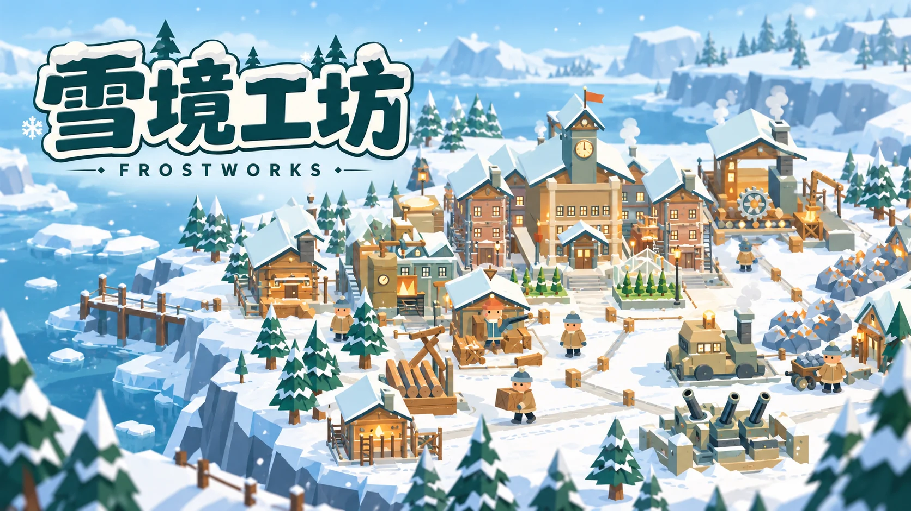

FROSTWORKS / 玩法介绍
雪境工坊
从一簇炉火，到风雪里的工业城邦。亲自采集、搬运与建造，让工厂和防线一起运转。
免费在线 · 单人游戏简体中文 / 繁體中文 / English

怎么玩
你在越来越冷的雪原上建立营地，先解决供暖与住居，再把木石、矿物加工成更高级的零件。建筑依赖真实库存，生产、运输与防线必须共同成长。
从这里开始
先让营地暖起来
跟随当前目标采集木材与石料，靠近资源停下即可自动采集。优先完成供暖和基础住居，再扩展制造设施。
让材料真正流动
点选建筑蓝图，带着材料靠近投入；到仓库卸下背包。高级设施需要加工材料，先检查前一道工序与运输是否跟得上。
为雪潮留出防线
严寒与敌袭按游戏内时间推进。建设更快并不会让威胁延后，留出资源建防御、修复设施，避免只顾扩张。
主线之后，还有新的海阔天空
主线胜利后，可以继续无尽城防，也可以选择远征新大陆。新大陆加入更远的采集点、运输与港口建设，以及陆地、海域巨兽；完成相应目标后再进入后续挑战。无尽模式清完当前波次才推进，材料升级也要实际支付。
操作方式
键盘与鼠标
WASD 或方向键移动，也可点击地面前往。停在资源附近自动采集，点击蓝图投入材料，靠近敌人自动攻击。P、空格或 Esc 暂停。
手机与触屏
用屏幕摇杆移动，点选资源、建筑蓝图和界面按钮。采集与近身战斗会在合适距离自动进行；小屏可横屏游玩，让地图更开阔。
保存与继续
进度保存在当前浏览器中。游戏提供手动保存与阶段存档；继续存档时先保持暂停，再由你恢复。离线不会推进生产和敌袭，请勿把清理浏览器数据当作普通退出。